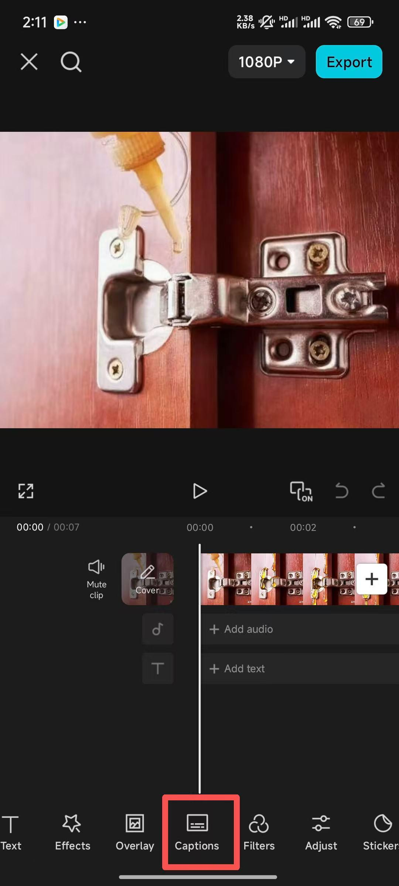
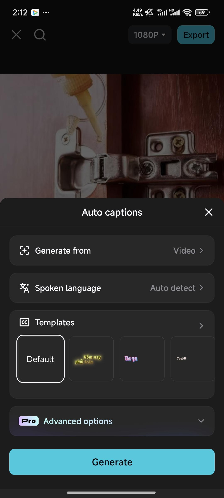
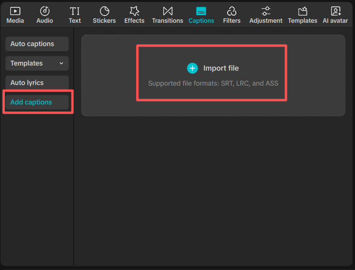

AIには順序を任せる。比較の答えは、仕様で確かめる。
ここでは、ポーチにまっすぐ収納するブラシを選ぶ紹介原稿を作ります。説明用の架空設定です。ポーチの有効な長さ11cm、ブラシAはケース込み12cm、Bはケース込み9cm。実商品の仕様や本人の実測ではありません。
- このページで指示文を作る「記入例を入れる」→「紹介する順序の案」→「AIへ貼る指示文を作る」。商品情報から指示文を作る
- ChatGPTへ貼って送信するchatgpt.comのメッセージ入力欄へコピーした文を貼り、送信。利用案内が出たら画面の手順を確認します。
- 返答の「伝える言葉」を照合する12cmと11cmの比較、Bを選ぶ条件が合うか。仕様にない効果・体験・収納成功を外します。
このページはAIを呼び出しません。指示文を作り、AIの返答を人が確かめる道具です。AIをまだ使わない人は、下の架空原稿で照合と保存を試せます。
「どちらも入る」は、数字と合っていない。
次は照合のために作った架空の返答例です。実際のAI回答ではありません。
「AもBもポーチに入り、持ち歩きにぴったり。」
何を比べ、何を保証したか？A 12cm ＞ ポーチ11cm
B 9cm ＜ ポーチ11cm
「長さで選ぶならB。ほかの寸法は確認が必要。」
選べる条件と、まだ言えないことを分ける確認した原稿は、疑問への答えまで話す。
上の架空設定だけを使った4行。実商品へ使う数値ではありません。
- 1
「このポーチ、使える長さは11cm。」
映すもの：ポーチの有効な長さ11cmを示す説明図。 - 2
「Aはケースごとで12cm。まっすぐには収まりません。」
映すもの：ケースに入れたAの12cmと、ポーチの11cmを同じ目盛りで示す。 - 3
「Bは9cm。長さに2cm余裕があります。」
映すもの：ケースに入れたBの9cmと、残る長さ2cmを同じ目盛りで示す。 - 4
「長さで選ぶならB。幅・厚みと購入条件は商品ページで確認してください。」
映すもの：長さ以外に確認する幅・厚み・開口部と、購入条件の案内。
自分の商品では、買い手の疑問と、確認済みの寸法・映像へ替えます。「ケース付き」の説明だけで終えず、その事実で何を選べるかまで話します。
まずは商品情報から紹介原稿を作ります。撮影後の字幕は、必要な人だけ下の補足へ進めます。
商品情報から作る指示文の内容を、詳しく見る
商品の仕様と出所を入れ、AIへ貼る指示文を作る。
作業を選ぶと必要な入力欄が出ます。生成した指示文をコピーしてAIへ貼り、AIが返した原稿案を自分で確かめます。
商品情報や原稿を入れ、AIへ貼る指示文を作る
確認した原稿を保存する。
「テキストで保存」を押し、ダウンロード一覧から保存した原稿を開きます。4行が残り、話す内容と撮れる映像が合っていれば、今回の原稿づくりは完了です。
6つの工程の使い分け
- 商品情報を整理：確認した仕様と、未確認の情報を分ける。
- 紹介する順序の案：同じ材料から紹介の順番を出す。
- 最初の一言を3案：誰のどの場面へ入るか比べる。
- 原稿照合：入力にない表現・数値を見つける。
- 字幕の区切りを作る：確定原稿の語句を変えず区切る。
- 字幕の時刻と書式：確認済み時刻と確定原稿からSRT形式を頼む。
字幕の時刻をAIに推測させません。確定時刻があれば、下のSRTツールでも整形できます。
AIへ任せるのは、確認した事実から言葉と順序の案を出す作業です。数字と結論が合うか、未確認の効果や収納成功を足していないかを確かめ、使う原稿を保存したら完了です。字幕は必要な人だけ使います。
音声付き動画があるスマホ利用者へ：自動字幕の例（任意）
例はCapCutの公式Help画面です。上で作った原稿を読み上げた音声付き動画を、新規プロジェクトへ入れてから使います。
- 画面下のCaptionsを開き、Auto captionsを選ぶ。
- Spoken languageで話す言語を確認し、Generateで字幕を生成。
- 生成された字幕を選び、誤字・商品の名前・表示時刻を直す。音付きで全編を再生し、声と字幕が合うか確認。


CapCut公式の自動字幕ガイド。これは本人が携帯ブラシを編集した結果ではありません。画面や使える機能は、利用環境で確認してください。
PC/Webで字幕をまとめて読み込む人へ（SRT・任意）
SRTを使わなくても、上の紹介原稿づくりは完了です。SRTを読み込める編集ソフトを使い、字幕の時刻を扱う人だけ進めます。スマホ版で直接取り込めるとは限りません。
一字幕ずつ作る代わりに、原稿をまとめて渡す。
携帯ブラシの架空原稿です。SRTは、字幕と開始・終了時刻をまとめたファイル。字幕を出す秒数と消す秒数は、自分で音声を聞いて確かめます。
終了時刻SRTへまとめる
字幕の文と時刻をまとめて入力し、一括で読み込めるSRTにします。商品の仕様、字幕の区切り、音声と字幕の表示タイミングは自分で確認します。
字幕を出す秒数・消す秒数・文を、SRTへ変える。
字幕を出す開始秒と消す終了秒は、自分の動画の音声を聞いて確認します。保存した字幕.srtを編集ソフトへ読み込み、音声と字幕が合うか全編再生します。
確認した秒数と字幕を入力する
PC版CapCutの公式例：Captions→Add captions→Import fileで、保存した字幕.srtを選びます。読み込み後は音付きで全編を再生し、字幕の誤字・時刻・位置を確認します。

CapCut公式の字幕取込ガイド。PC/Web向けの任意手順です。スマホでSRT直接取込を使えるとは案内していません。